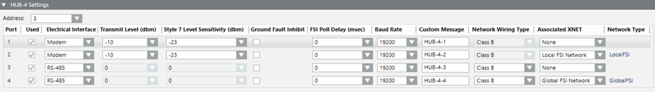

Fire WAN HUB-4 Reference
This section provides some reference information about the Fire WAN Enclosure configuration parameters.
For a step-by-step guide to the HUB-4 configuration, see the workflow in Configuring a Fire WAN.
HUB-4 Configuration Parameters
In Engineering mode, the FireWAN tab of the HUB-4 node provides the HUB-4 Settings expander, to configure the HUB-4 lines.
You can configure the fields manually or drag the node of the connected XNET from System Browser onto the corresponding HUB-4 port line in the expander.
The HUB-4 Settings expander includes:
- Address: HNET address of the HUB-4. Then, in the port table:
- Port: Read-only port number, 1 to 4.
- Used: Check box to enable the configuration of the corresponding HUB-4 port.
- Electrical Interface: RS-485 or Modem selection, to define in pairs. Ports 1 and 2 must have the same electrical interface, and so must ports 3 and 4.
- Transmit Level (dbm): Transmit level for modem lines (it does not apply to RS485 lines). Do not change the default level (-10 dbm) unless it is determined that the line to the fire panels attenuates the signal sufficiently to inhibit proper communication. By adjusting the level closer to zero, you are increasing the transmitted level. Conversely, if the fire panel is close by, you may have to adjust the level lower by using a number further away from zero.
- Class X Level Sensitivity (dbm): Class X level sensitivity for modem lines (it does not apply to RS485 lines). Class X level sensitivity is provided to change the point at which the circuit fails over to the panel backup communication channel. Normally, the default setting -23 dbm is sufficient. However, if you have a circuit with a short run and are experiencing troubles, adjust the setting in 5 dbm increments towards 0 dbm.
- Ground Fault Inhibit: Check box to inhibit ground detection on the communication lines. The HUB-4 interface can detect ground faults on the communications channels. Existing systems may have communication lines grounded and operate properly as ground detection/annunciation was not available at the time the original system was installed. When new systems are connected to existing wiring, ground faults may be annunciated. This is not the fault of the new system, but an indication of a pre-existing condition.
- FSI Poll Delay (msec): Delay between successive polls to panels on the communication link. This value is set to zero by default, and can be adjusted for slow or poor quality connections.
- Baud Rate: Communication baud rate that must match the setting of the connected equipment.
- Custom Message: Description of the line, used in System Browser and Event List.
- Network wiring type: Select Class B or Class A.
- Associated XNET: Select the XNET networks associated to the HUB-4 ports.
- Network Type: Read-only field that shows the type of Fire Network, which can be Local FSI or Global FSI.
NOTE: The Global FSI option is not available for FireFinder XLS/MXL control panels. Only Desigo Fire Safety Modular and Cerberus Pro Modular are supported.
